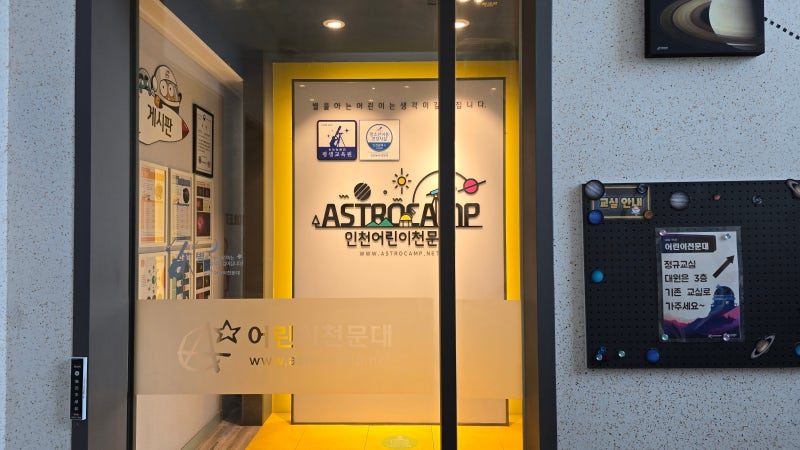

일일체험
가족과 함께 특별한 밤을 만드세요
정규반 외에도 가족 단위로 참여할 수 있는 다채로운 일일 관측 프로그램을 운영합니다.

가족과 함께하는 우주여행
별을 배우고, 직접 망원경으로 관측하며 온 가족이 우주 탐험가가 되어보는 <가족과 함께하는 우주여행>에 초대합니다! 온 가족이 함께 밤하늘의 신비를 즐기며 유익함과 낭만이 가득한 밤을 보내세요!
학생 동반 가족전용

일일별자리체험
밤하늘을 수놓은 별자리와 천체를 직접 관측하며 우주를 탐험해요! 실제 아이들이 관측을 진행하는 인천어린이천문대 관측소에서 특별한 경험을 합니다!
학생 전용